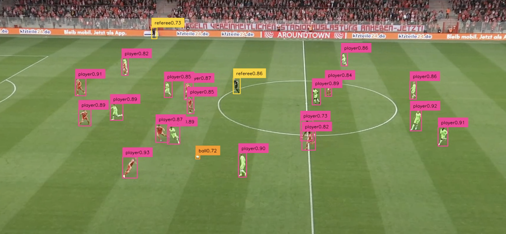
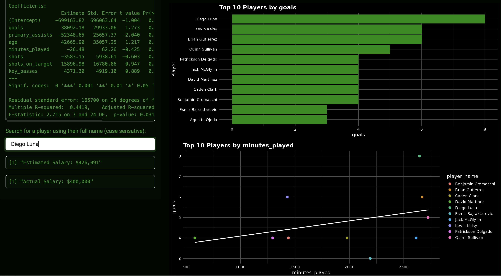
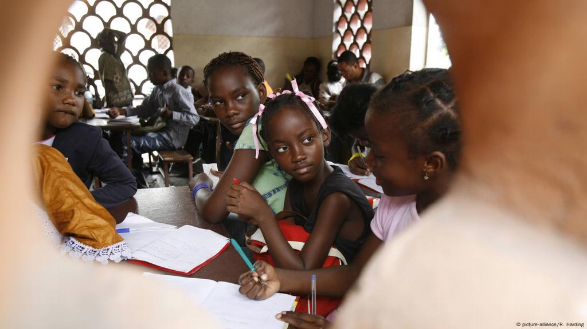
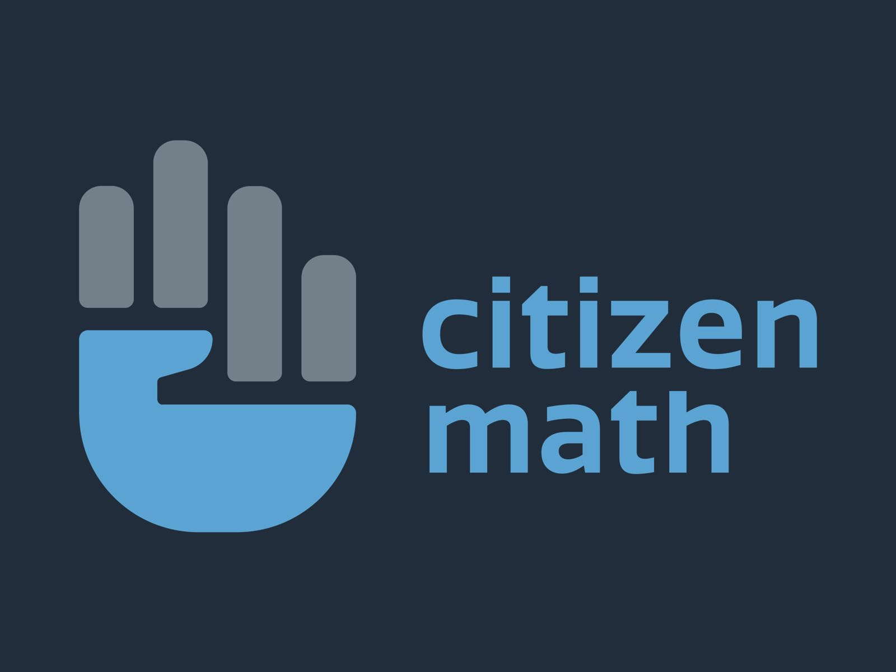
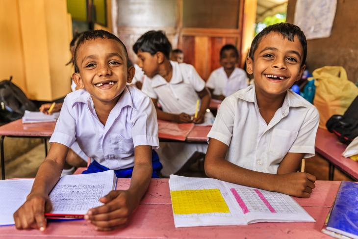
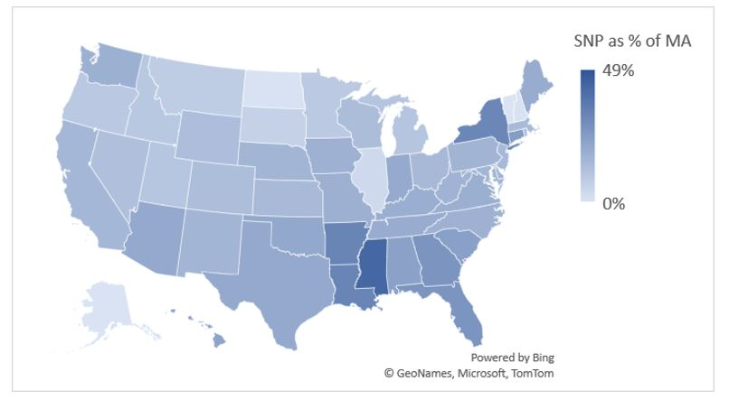
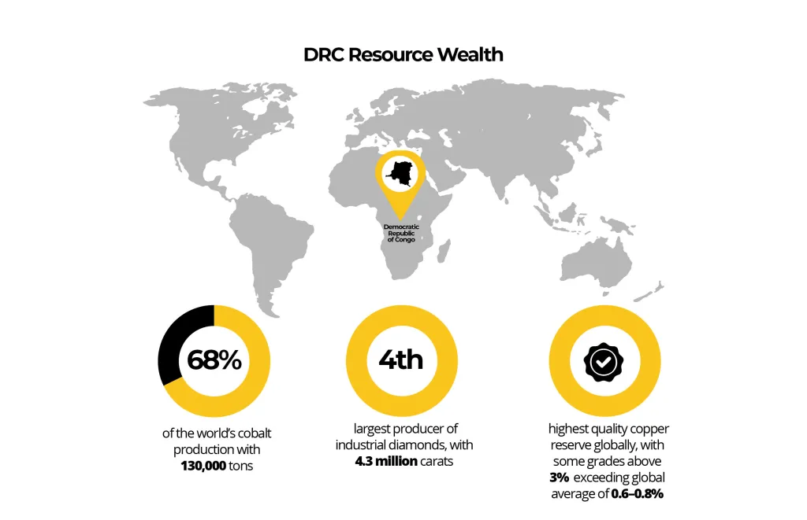

Projects

A Computer Vision Framework for Multi-Class Player Detection and Tracking in Soccer Broadcast Footage
Smart Soccer Insights
The use of artificial intelligence in soccer analytics is rapidly expanding, yet most professional tracking systems still rely on expensive multi-camera setups that limit accessibility for lower-resource teams. This paper investigates whether coordinate and event-level information can be reliably extracted from raw broadcast footage using a single-camera by developing a system that combines a YOLO object detection model, a keypoint pitch detector, and the ByteTrack tracking algorithm to identify and track players, referees, goalkeepers, and the ball. The model was trained on a custom dataset containing Bundesliga, NCAA, and UPSL broadcast footage. Results show that the pipeline achieves high performance in detecting players and on Oficials, with strong precision, recall, and mAP scores across most classes. Ball detection remains the primary challenge due to its small size, rapid movement, and frequent occlusion. Despite this limitation, the findings demonstrate that AI can reliably extract player-level spatial information from a single broadcast camera. This work highlights the potential for afordable, scalable computer vision systems in soccer analytics. By reducing the reliance on specialized hardware, the proposed approach opens the door for colleges, academies, and amateur clubs to adopt data-driven methods traditionally accessible only to professional teams.
- Technologies - Python, OpenCV, YOLOv8
- Role - Artificial Inteligence Engineer
- View - Click here for the full paper

U.S. Soccer Player Analytics and Recruitment Dashboard
Player Performance Lab
Developed an interactive R Shiny application for soccer scouts, fans, and coaches to explore and facilitate player discovery. Integrated an external API to retrieve real-time player statistics, with filtering options for key performance indicators. The app generates custom visualizations of KPI-metrics and salary prediction models to determine if are worth their earnings. Designed to support data-driven recruitment decisions, the tool combines exploratory data analysis with predictive modeling in an accessible, user-friendly interface.
- Technologies - R Studio, R Shiny
- Role - Data Scientist & Full-Stack Developer
- View - Click here for a live demo and scout your own players
DGT-International Website
Developing the DGT-INT Website
I designed and developed the DGT-INT website to showcase my data science, analytics, and web development work. Built with HTML, CSS, JavaScript, and TypeScript, the site features an interactive, filterable project gallery, responsive design, and integrations for downloadable resources. I create a clean, user-friendly platform that highlights both technical skills and professional experience while serving as a central hub for my projects and publications.
- Technologies - HTML, CSS, JavaScript
- Role - Full-Stack Developer
- View - Click here to...
Predicting Credit Card Approvals: A Machine Learning Study
Classification Models for Risk Assessment and Fair Decision-Making
I built a machine learning pipeline to predict credit card approval decisions using applicant data, exploring models like logistic regression, decision trees, random forests, and gradient boosting to understand the tradeoffs between accuracy and interpretability. Along the way, I addressed class imbalance and evaluated performance using cross-validation and standard classification metrics. I also looked beyond model performance by analyzing fairness across sensitive attributes and reflecting on the ethical implications of using automated systems in financial decision-making, ultimately presenting the results with practical takeaways.
- Technologies - R
- Role - Data Scientist
- View - This project is no longer publicaly available. However, please reach out if you are interested.

Le Projet d’Appui à la Scolarisation des Filles Affectées par le Conflit (PASCOFI)
Evaluating Education Access for Conflict-Affected Girls in Mali
contributed to the evaluation of PASCOFI, a program focused on improving educational access and outcomes for girls affected by conflict in Mali. My work involved supporting data collection and analysis to understand the program’s impact on enrollment, attendance, and retention. I helped design surveys, cleaned and validated student- and school-level data, and produced summary statistics and visualizations to communicate key findings. Working with multilingual teams, I also helped ensure that context-specific education indicators were interpreted accurately, contributing to recommendations for scaling the program in conflict-affected regions.
- Technologies - STATA, R, Excel
- Role - Data Scientist (American Institutes for Research)
- View - Please reach out if you are interested in learning more about this project

Citizen Math Impact Evaluation
Assessing Middle School Math Outcomes through Mixed-Methods Evaluation
I contributed to a U.S. Department of Education–funded evaluation of Citizens Math lessons in middle school classrooms, conducted by the American Institutes for Research in partnership with WestEd. The project examined the program’s impact on students’ math skills and their perceptions of the subject. In my role, I tracked participating schools, automated the extraction and processing of district administrative records, and cleaned and analyzed student and teacher survey data. I also coordinated with district and school partners to manage communications and conducted preliminary quality checks to ensure data accuracy throughout the study.
- Technologies - R Studio, STATA, and Excel
- Role - Data Scientist (American Institutes for Research for U.S. Department of Education, subcontracted to WestEd)
- View - Please reach out if you are interested in learning more about this project
Strengthening Teacher Professional Development for Multilingual Foundational Learning at Scale
Randomized Controlled Trial Evaluation in Côte d’Ivoire, Democratic Republic of Congo, and Senegal
As part of an IDRC-funded partnership between the American Institutes for Research and Dalberg, I contributed to a large-scale randomized controlled trial evaluating the impact of FLIP programming on multilingual foundational learning. My work included designing quantitative research instruments, collecting data through teacher surveys, student assessments, and classroom observations, and analyzing teacher and student outcomes using OLS regression with covariates for precision. I supported sample selection, power calculations, and the adaptation of validated tools to measure educational outcomes in multilingual contexts.
- Technologies - STATA, R, Excel
- Role - Data Scientist (American Institutes for Research for IDRC in partnership with Dalberg)
- View - Click here to learn more on GPEKIX's website

Promoting Autonomy for Literacy and Attentiveness through Market Alliances
Midline Evaluation of Literacy, Health, and Nutrition Outcomes through a Randomized Controlled Trial
As part of a mixed-methods evaluation for Save the Children and the American Institutes for Research, I contributed to assessing the PALAM/A program’s impact on student literacy, health, and nutrition in Sri Lanka. My work included analyzing literacy assessments, health and nutrition surveys, and school meal provider cost surveys. I measured changes in outcomes using randomized controlled trial data, providing evidence to inform program effectiveness and policy decisions.
- Technologies - STATA, R, Excel
- Role - Data Scientist (American Institute for Research for Save the Children)
- View - Click here to view the full report USAID's website
24/7 Access Makes the Difference: After-Hours Access to Emergency Departments is Critical in Supporting Patients and Communities
Analyzing Patterns in Emergency Care Access and Utilization
This project analyzed 2021 U.S. hospital emergency department (ED) visit data to understand patterns in after-hours utilization. The findings showed that nearly half of ED visits occur between 5 p.m. and 8 a.m., when other care options are limited. The analysis highlighted higher after-hours usage among pediatric patients, rural populations, and those experiencing trauma, overdose, or poisoning. Insights from this study supported policy discussions on the importance of maintaining 24/7 hospital access, especially as other healthcare sites close during off-hours.
- Technologies - STATA, Microsoft Excel
- Role - Data Analyst (KNG Health Consulting for the Coalition to Strengthen America's Healthcare)
- View - Click here to view blog and full report on the Coalitions's website

Growth in Special Needs Plans Outpaces that of Medicare Advantage, Particularly in the South
Analyzing Trends in Medicare Advantage Special Needs Plans
This project examines the rapid growth of Medicare Advantage Special Needs Plans between 2021 and 2023, with a focus on geographic variation and enrollment patterns. Using CMS enrollment data, I analyzed relationships between SNP penetration, Medicare Advantage enrollment, and regional trends—finding particularly strong growth in Southern states. The analysis included correlation calculations, percentage change tracking, and data visualization to highlight key patterns and disparities in access to coordinated care for high-need populations.
- Technologies - STATA
- Role - Data Analyst
- View - Click here to view blog on KNG's website

The Resource Curse: Economic Complexity in the Democratic Republic of Congo
Analyzing the Impact of Natural Resource Dependence on Economic Development
This project explored the relationship between the Democratic Republic of Congo’s abundant natural resources and its economic performance through the lens of the Economic Complexity Index. Using trade and economic data, the analysis examined how reliance on raw resource exports can hinder diversification and long-term growth. The project provided foundational experience in economic research, data interpretation, and presenting policy-relevant findings.
- Technologies - STATA, Microsoft Excel
- Role - Data Scientist
- View - This project has been archived. This project is no longer publically available. However, contact me if you are interested in this project.